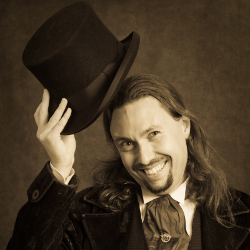

{{ page.title }}
Some guy from the internet who loves freedom.
Welcome to my home on the internet! Everything here is free
under the Creative Commons 3.0 license unless marked otherwise.
This site contains various pieces of writing across my various
interests, and spanning several years. You can
fork this site
on github if you wish.
{% assign count = 0 %}
{% for post in site.posts %}
{% comment %} Only show five posts, and skip DF ones {% endcomment %}
{% if post.categories contains 'df' %}
{% continue %}
{% endif %}
{% assign count = count|plus:1 %}
{% if count > 5 %}
{% break %}
{% endif %}